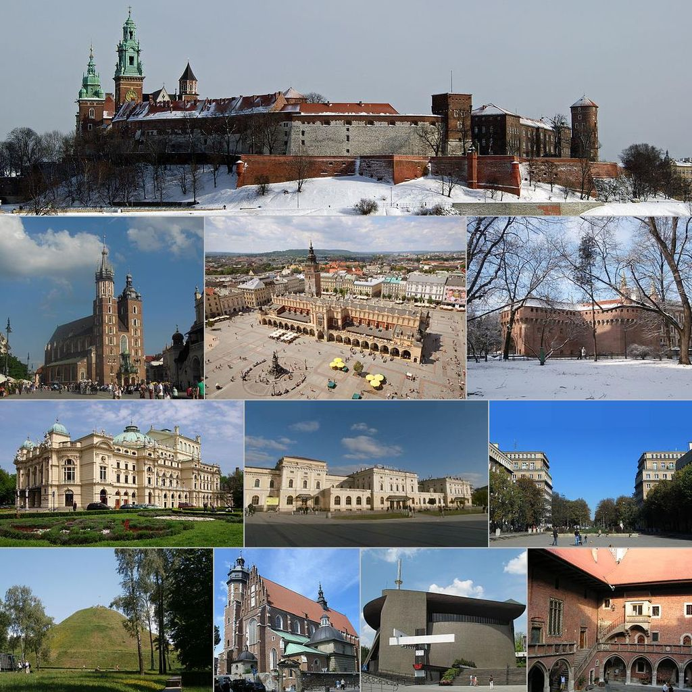

Kraków, Stołeczne Królewskie Miasto Kraków – miasto na prawach powiatu położone w południowej Polsce nad Wisłą, drugie co do liczby mieszkańców. Formalna stolica Polski do 1795 roku i miasto koronacyjne oraz nekropolia królów Polski.
Jedziemy do Krakowa!
Wisła – polskich rzek królowa
Od lat płynie wzdłuż Krakowa
Sto tajemnic w sobie chowa
Wisła – polskich rzek królowa!
To jest miasto ukochane
Przez turystów uwielbiane
Bardzo często odwiedzane
Moje miasto ukochane!
Kalina Rokosz
Pełna wersja wiersza, kliknij tutaj

- Mapa
- Ciekawe miejsce
- Zabytki
- Sport
- Mapa
- Ciekawe miejsce
- Zabytki
- Sport
| Nazwa rezerwatu | Powierzchnia | Przedmiot ochrony |
|---|---|---|
| Bielańskie Skałki | 1,73 ha | spontaniczne procesy sukcesji biocenoz leśnych na skalistym, dawniej pozbawionym lasu terenie |
| Bonarka | 2,29 ha | rezerwat geologiczny, uskoki geologiczno-tektoniczne, powierzchnie abrazyjne, odsłonięte utwory jurajskie, kredowe i trzeciorzędowe |